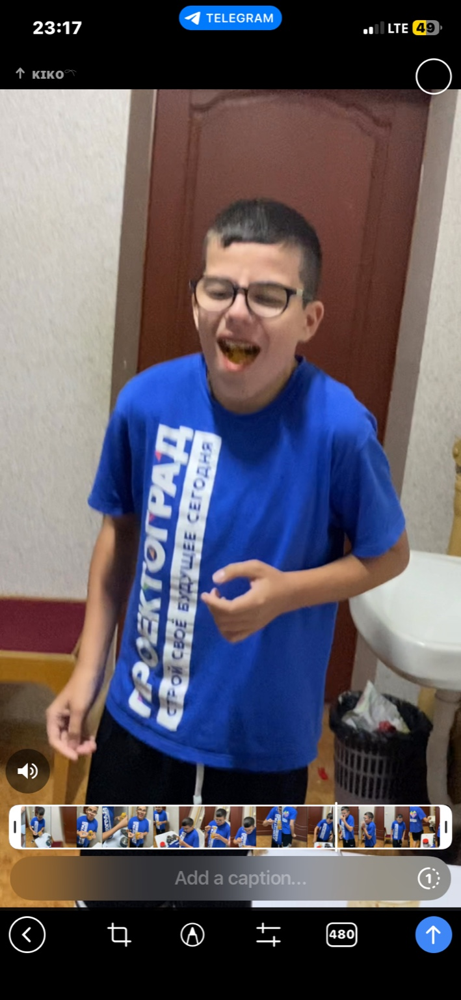

ЗАСЕКРЕЧЕНО
Досье объекта: Аномалия-50 — Позывной «Полтос»
ЗАСЕКРЕЧЕНО
Досье объекта: Аномалия-50
Позывной: «Полтос»
Статус: Активная угроза. Контакт — запрещён.
⸻
Общие сведения
• Рост: 145–151 см.
• Телосложение: Деформированное. Отсутствует шея, голова словно «вросла» в плечевой пояс.
• Внешние признаки: Всегда носит тёмные очки. Лицо бледное, непропорциональное.
• Поведенческие особенности: Агрессивен, жесток, склонен к «игре» с жертвами.
⸻
Аномальные свойства
1. «Шоколадный глаз»
• При снятии очков правый глаз начинает излучать направленные лазерные лучи высокой температуры.
• Мощность зависит от эмоционального состояния объекта. Чем сильнее раздражён — тем интенсивнее атака.
• Лучи способны прожигать бетонные стены, металл и органику.
2. Гипертрофированные конечности
• Несмотря на низкий рост, фиксированы случаи аномального удлинения рук при попытке жертвы к бегству.
• Руки вытягиваются до 4–5 метров, обхватывают и возвращают жертву обратно.
• В большинстве случаев конечности после контакта оставляют глубокие ушибы и переломы.
⸻
Модель поведения
• Нападение всегда сопровождается боксерскими приёмами. Объект бьёт в корпус и лицо, ломает кости, пока жертва не потеряет возможность сопротивляться.
• Только после этого снимает очки. Лазерное излучение используется как «финальный акт».
• Зафиксированы свидетельства садистских действий: объект нарочно задерживает момент расправы, чтобы вызвать максимальный ужас.
⸻
История проявлений
• Брянская область, пгт. Климово. Первое официально зарегистрированное столкновение. После контакта с объектом на месте происшествия обнаружены лишь обугленные останки, едкий запах и силуэты тел на стенах.
• Местные жители в устной речи называют его «Полтос», считая, что встреча с ним гарантирует смерть «без шансов».
• В народном фольклоре закрепился как современный «бабай»: детям говорят, что если они будут «заёбывать» родителей — придёт короткий человек без шеи, снимет очки и «сожжёт насквозь».
⸻
Степень угрозы:
КРАЙНЕ ВЫСОКАЯ.
Прямой контакт смертельно опасен. В случае обнаружения объекта рекомендуется немедленная эвакуация и дистанционное подавление.
